Overview
| 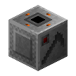 |
As of version 0.4.0 support was added to the Auto Farming Machine for allowing custom crops to be harvested using items and blocks with NBT variables.
It is possible to even add support for global crops or use namespaces in group names to isolate your mod crops in Automation so that its more specific.
This page will explain the variables used for both the mature block, and the two items versions.
It its also possible to make items with only seed slot support, this acts similar to how potatoes or pumpkins function with Automation.
It is really customisable as we have made most of the code able for customizing for third party mods using NBT variable settings on your item and block side.
If you want to know more about the Auto Farming machine you can read this article for more information on the machine instead.
|
Setting Variables
You can apply the variables on your mod side however you like, however its recommended that you have them on a block or item tick update so that they can sync properly.
Most items have a When item in inventory tick trigger that can be used to assign item NBT variables to your custom item.
Blocks also have a option for this too called Update tick trigger in MCreator, that allows you to run script on a tick update.
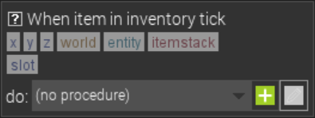
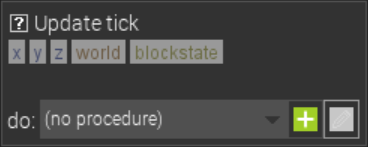
Group Name
Grouping the mature block stage, seed item, and crop item with the string NBT tag of autoFarmingGroupName allows for telling the auto farming machine
what items are supported for its yield and what blocks can be harvested. This can be any value you wish to use, if you want to seperate your mod from other mods a bit more and avoid overlapping
blocks and yield items its possible to use your mod's namespace before the group name like seed below.
"mod_namespace:group_name"
You can also use group names without namespaces for global support similar to how forge tags work.
"group_name"
The group name needs to be defined for both your items and mature block stage. Your growth stages should NOT have this tag, when usinge stage resetting its important to clear the group name from lower
growth stages so the block does not continue to be harvested at lower growth stages.
| VALUES |
TYPE |
ELEMENTS |
| Any |
String |
- Mature Block
- Seed Item
- Crop Item
|
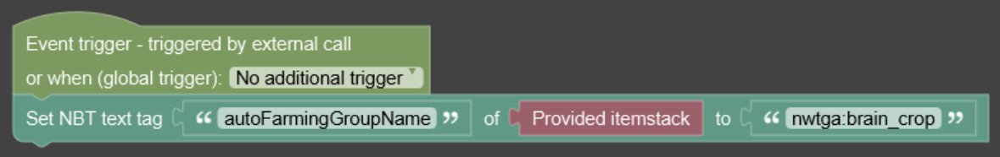
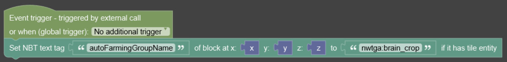
Use Custom Script
The one most important NBT variable needed is the autoFarmingUseCustomScript a logic NBT variable, this allows you to enable custom crops for the seed, crop, and mature block.
To use custom crops the value must be set to ture. This allows the auto farming machine to switch from minecraft crops to custom crops modes. The false value will disable the custom crops.
and instead use the built-in vanilia script instead.
| TAG |
| autoFarmingUseCustomScript |
| VALUES |
TYPE |
ELEMENTS |
| True: Enables Custom Crops |
Logic |
- Mature Block
- Seed Item
- Crop Item
|
| False: Disables Custom Crops |
Logic |
- Mature Block
- Seed Item
- Crop Item
|
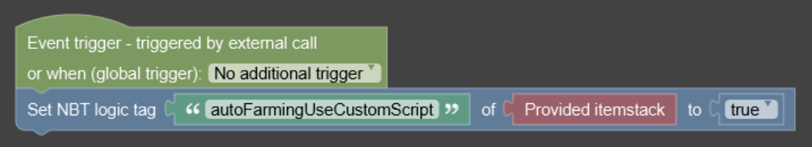
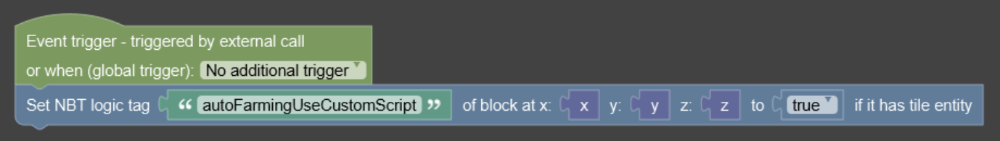
Age
This value is used when using the REPLACE MODE STAGE value autoFarmingAge. This number NBT value is sent to the block that is detected.
After the value is sent to your block it is possible to test if the value is the same as your seed's age reset NBT variable number if true then you can use the block's tick
update to do something with your block such as reset the block to a lower stage.
| VALUES |
TYPE |
ELEMENTS |
| Any Number ≥ 0 |
Number |
|
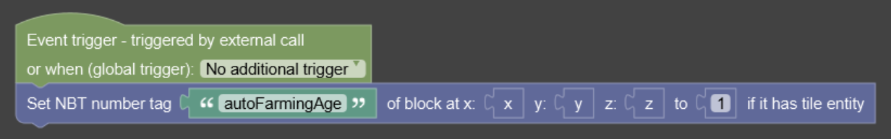
Age Reset
This NBT number variable autoFarmingAgeReset, is used to store the stage retun value which is read by auto mations then applied to the age variable of
your custom block. Do take note that your custom crop blocks do need to be a tile entity to use the stage feature. Read more the age section above for more on what to do when the age is set. This is only used
if you used under the replace mode stages option if you use air or water it is not required.
| VALUES |
TYPE |
ELEMENTS |
| Any Number ≥ 0 |
Number |
|
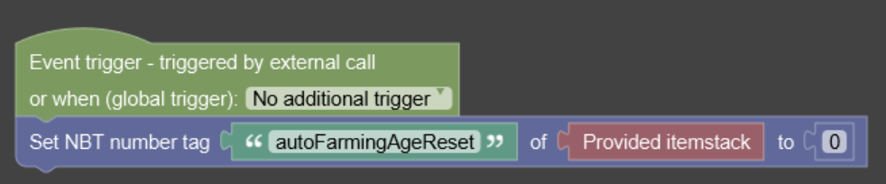
Replace Mode
This NBT string variable autoFarmingReplaceMode, controls the block action on what to do with the block after the items are added to the block's slots.
- Air: The mature block will be replaced with an air block. Great for land plants.
- Stage: Automation will set the mature block's autoFarmingAge value as the same seed NBT value from it's autoFarmingAgeReset number.
- Water: The mature block will be replaced with an air block. Great for water plants.
| TAG |
| autoFarmingReplaceMode |
| VALUES |
TYPE |
ELEMENTS |
| air |
String |
|
| stage |
String |
|
| water |
String |
|
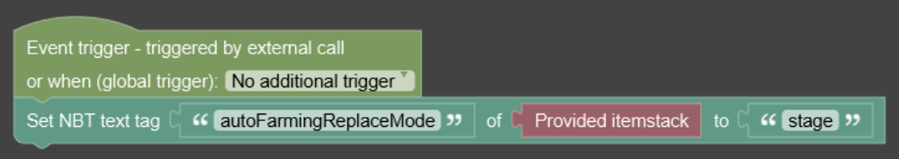
Group Type
This NBT string tag autoFarmingGroupType, is used to tell automation what slot the item should be used for.
Not defining the value will prevent automation from knowing what slot it should be used for.
- Seed: The item will only work in the seed slot and only requires seed item variables.
- Crop: The item will only work in the crop slot and only requires crop item variables.
- Both: The item will work in both seed and crop slots and requires both seed and crop item variables.
| VALUES |
TYPE |
ELEMENTS |
| crop |
String |
|
| seed |
String |
|
| both |
String |
|
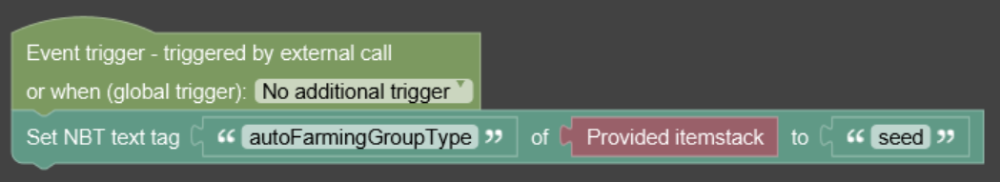
Bonus Yield
This NBT logic tag autoFarmingSeedBonusYield and the autoFarmingCropBonusYield, is used in automation to enable or disable the bonus yield from
upgrades if they are installed in the upgrade slot. It is possible to disable either slot or both by setting the value to false. Use true if you wish to keep the bonus yield mechanics that the machine
has normally.
- True: Enables bonus yield for upgrades
- False: Disables bonus yield for upgrades
| TAG |
| autoFarmingSeedBonusYield |
| autoFarmingCropBonusYield |
| VALUES |
TYPE |
ELEMENTS |
| true |
logic |
|
| false |
logic |
|
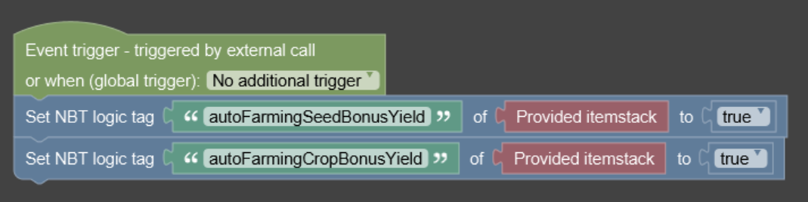
Harvest Mode
This NBT string tag autoFarmingSeedHarvestMode and the autoFarmingCropHarvestMode, is used to tell automation what the yield should be for harvesting the
items and the value to put in the slots. This value can not be custom but instead uses vanilla preset values that can be used for yield presets. It is possible to make many kinds of crops using these settings.
| TAG |
| autoFarmingSeedHarvestMode |
| autoFarmingCropHarvestMode |
| VALUES |
ELEMENTS |
NOTES |
| berry |
Mature Sweet Berry |
- Random value of (2 : 50%), (3 : 50%)
|
| cocoa |
Mature Cocoa Pod |
|
| melon |
Melon Block |
- Random value of (3 : 20%), (4 : 20%), (5 : 20%), (6 : 20%), (7 : 20%)
|
| netherwart |
Mature Netherwart Block |
- Random value of (2 : 33%), (3 : 33%), (4 : 33%)
|
| potato |
Mature Potato / Carrot Crops |
- Random value of (0 : 7.8%), (1 : 31.4%), (2 : 41.9%), (3 : 18.6%) + (2 : 100%)
|
| sugarcane |
- Sugarcane
- Pumpkins
- Both Mushrooms
- All Vines
- Bamboo
- Kelp
- Cactus
|
|
| wheat |
Mature Wheat / Beetroot Crops |
- Random value of (0 : 7.8%), (1 : 31.4%), (2 : 41.9%), (3 : 18.6%)
|
| VALUES |
TYPE |
ELEMENTS |
| berry |
string |
|
| cocoa |
string |
|
| melon |
string |
|
| netherwart |
string |
|
| potato |
string |
|
| sugarcane |
string |
|
| wheat |
string |
|
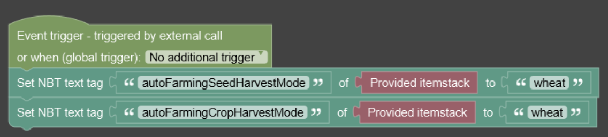
Releated Pages
Below are a list of related wiki pages.
Changes
Below are a list of changes made to the block.
- NWTG Automation 0.4.0
- Added support for groups
- Added support for group types
- Added support for block replacement
- Added support for block stages
- Added support for upgrade bonus yield
- Added support for harvest yield
- Added support for enableing custom script